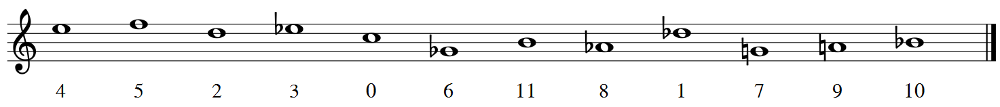

Gustav Mahler
(1860–1911)
La disonancia siempre ha formado parte de las experiencias musicales. Con la consonancia ha venido siempre emparejada la disonancia, mano a mano, para confrontarse y contrastarse mutuamente. Y es que sin una jamás podría existir la otra.
En la Antigua Grecia, la armonía musical se consideraba unida al resto del universo. La rotación de los astros emitía sonidos armónicos, y era la armonía la que apaciguaba el alma. ¿Pero qué era la armonía, sino la unión de consonancia y disonancia? Como dijo Aristóteles:
El alma es armonía porque la armonía es mezcla y síntesis de contrarios, y de contrarios se compone el cuerpo.1
Es bien sabido que la Escuela de Pitágoras, con su estudio sobre proporciones entre notas, buscaba encontrar cuáles eran los intervalos más consonantes. Encontraban, a su vez, aquellos que no lo eran, y es así como se dio comienzo a la teoría de la disonancia.
Ya en la Edad Media, la polifonía fue forjando normas sobre el uso de las disonancias. La primera regla compositiva de la música occidental2 fue la regla franconiana, que expresaba que las disonancias debían ocurrir en la parte débil del compás, mientras que las consonancias en la parte fuerte. Es así como los compositores trenzaban consonancia y disonancia al tejer los hilos de la música.
Poco a poco la disonancia pasó a ser usada como floritura melódica: en notas de paso, apoyaturas o retardos, entre otras. Esta función melódica fue impregnando el contrapunto hasta llegar a ser pieza clave en la continuidad de las voces. Adquirió entonces una nueva función contrapuntística, ¿y quién no se ha emocionado al escuchar una disonancia bachiana?
Pero la disonancia estaba aún inscrita a la tonalidad regente. No fue hasta la introducción de acordes extraños que la disonancia pasó a ser el centro de atención. Para ello hubo que esperar hasta el siglo XIX, que fue testigo de un desarrollo del sistema armónico sin precedentes.
Aunque las posibilidades que ofrecía la tonalidad parecían infinitas, sus límites empezaron a entreverse hacia finales del siglo XIX. En palabras de Arnold Schoenberg:
El oído se fue familiarizando gradualmente con gran número de disonancias, hasta que llegó a perder el miedo a su efecto perturbador.3
Esta época culminó con los dramas musicales de Richard Wagner, en los que todos los elementos de la obra estaban detalladamente estudiados por el compositor. A este concepto lo llamaba Gesamtkunstwerk («obra de arte total»4 ), ya que se aseguraba personalmente de que en sus óperas las artes escénicas, musicales, poéticas y visuales se combinaran entre sí a la perfección.
Richard Wagner
(1813–1883)
La idea del Gesamtkunstwerk la desarrolló alrededor de 1850, y la plasmó en su totalidad en su ciclo de cuatro óperas Der Ring des Nibelungen, estrenado el 16 de agosto de 1876. Wagner controló y creó cada aspecto de la tetralogía, desde la música hasta el libreto, el vestuario y la escenografía. Incluso mandó crear su propia sala de conciertos en Bayreuth, el Festspielhaus, para que el escenario se adecuara a sus ideas sobre el pensamiento y la cultura musical.
Así, a ojos de compositores posteriores, se habían agotado todas las posibilidades de la música tonal, y quizás ya había comenzado el viraje hacia el predominio de la disonancia con su abundante uso del cromatismo, como en el famoso primer acorde del drama musical Tristan und Isolde (1865).
Después de Wagner, otros compositores también previeron emancipar la disonancia en sus obras. Gustav Mahler reflejaba en sus sinfonías la fragilidad de la tradición anterior y la inminencia de su ruptura. Ya más adelante, en 1911, utiliza en el Adagio de su Décima Sinfonía una disonancia con casi todas las doce notas de la escala cromática. Sin duda, la tonalidad quería ser reemplazada.
Gustav Mahler
(1860–1911)
Siguiendo la concepción del progreso como un camino ascendente, el paso siguiente para la composición musical debía consistir en deshacerse progresivamente de la tonalidad y desarrollar la «emancipación de la disonancia»3. Así fue como Arnold Schoenberg ideó sus teorías del pensamiento musical, y éstas dieron paso a la creación de la atonalidad. [1]
Fuertemente influido por Wagner y Mahler desde su adolescencia, Schoenberg comenzó componiendo al estilo posromántico de su época, llevando el cromatismo y la orquestación hasta el extremo. Sin embargo, y no espontáneamente, empezó a buscar en sus composiciones que cada sonido tuviera valor por sí mismo, un valor independiente de su funcionalidad tonal.
Arnold Schoenberg
(1874–1951)
Para él, la música no estaba intrínsecamente dirigida a una tónica. En las progresiones, lo importante era el paso de un acorde a otro, y no hacia dónde se dirigían éstos. Además, él opinaba que se debían poder utilizar las notas de los modos eclesiásticos libremente, por lo que consideraba las notas no diatónicas tan válidas como las diatónicas. Esto hacía imposible distinguir unas de otras, no pudiendo identificar apenas la tónica. De esta, y de otras muchas formas, Schoenberg conseguía que la jerarquía tonal quedara desestabilizada. [1]
De esta época es su primera obra importante, Verklärte Nacht («Noche transfigurada»), Op. 4. Compuesto en 1899, este sexteto de cuerdas está inspirado por el poema homónimo de Richard Dehmel. La música, según su autor, expresa el paseo de un hombre y una mujer en medio del abrazo de la naturaleza. Aunque en la obra aún prevalece la armonía tradicional basada en acordes, Schoenberg sitúa al oyente en un terreno de indefinición tonal, no sólo en el plano armónico sino también en el melódico. Además, hace uso del acorde de novena invertido, inexistente hasta entonces y, por tanto, rechazado por la crítica. [2]
Tras pasar por la etapa tonal posromántica, y debido a su convicción en la irrevocabilidad de la evolución de la música hacia el cromatismo total, en 1908 Schoenberg se desligó de la tonalidad completamente con el ciclo de canciones Das Buch der Hängenden Gärten.
A partir de entonces se dedicó a componer fragmentos muy breves cuya estructura era definida por motivos y no por la armonía. Era esto lo que solía ocurrir en formas musicales anteriores como la forma sonata. A este periodo en sus composiciones se le llama atonalidad libre, aunque cabe destacar que Schoenberg rechazaba fervientemente este término:
La expresión “música atonal” es de lo más desafortunada – es como llamar a volar “el arte de no caer” o nadar “el arte de no ahogarse”.5
A este periodo – es de 1912 – pertenece también su famoso ciclo de canciones Pierrot Lunaire, Op. 21. Su nombre completo es “Tres veces siete poemas de Pierrot Lunaire de Albert Giraud”, ya que está dividida en 3 grupos de 7 canciones cada uno, cuyos textos son una selección de 21 poemas del ciclo homónimo de Albert Giraud.
Se encuentran en ella abundantes referencias al número 7: Schoenberg hace un uso extensivo de motivos de 7 notas a lo largo de la obra, mientras que el conjunto musical que la interpreta, incluyendo al director, consta de 7 miembros. De hecho, a este conjunto de instrumentos – flauta, clarinete, violín, violonchelo, piano y cantante – se le ha dado el nombre de ensemble Pierrot en su honor.
Otros números importantes en la obra son el 3 y el 13. Cada poema consta de 13 líneas, mientras que la primera línea de cada poema aparece 3 veces: en las líneas 1, 7 y 13.
En esta obra no sólo hay una ausencia total de relaciones tonales, sino que el tratamiento vocal evita también cualquier relación estética con las técnicas tradicionales: es un Sprechgesang, un canto hablado. De hecho, Schoenberg se refiere a estas piezas no como canciones, sino como melodramas. [2]
Schoenberg no estaba aún satisfecho con su técnica compositiva, ya que admiraba las obras extensas de los músicos románticos y pensaba que su atonalidad no podía sostener una obra de gran envergadura. Es decir, necesitaba un hilo conductor mejor que los motivos para poder componer obras atonales más largas.
Además, por aquella época sufrió una crisis en muchos aspectos de su vida. En lo personal, su mujer Matilde Zemlinsky acababa de abandonarlo por otro hombre, aunque posteriormente volvería junto al compositor. Y, en lo profesional, sus obras no eran del gusto del público, por lo que no contaba con suficiente dinero para mantener a su familia. Todas estas circunstancias, unidas al desarrollo de la Primera Guerra Mundial, no le permitieron componer apenas entre 1914 y 1923.
Tras el final de la guerra, en 1919, Schoenberg fundó la Sociedad para Interpretaciones Musicales Privadas junto a sus discípulos y amigos Alban Berg y Anton Webern. Schoenberg, Berg y Webern se autodenominaron la Segunda Escuela de Viena en honor al grupo de compositores del siglo XVIII Haydn, Mozart y Beethoven, quienes formaban la Primera Escuela de Viena.
En la Sociedad para Interpretaciones Musicales Privadas se presentaban músicas contemporáneas en circunstancias que favorecieran su adecuada apreciación. Así se evitaba que dichas obras, al no ser entendidas por el público, fueran inmediatamente rechazadas. Las obras de compositores como Mahler, Debussy, Bartók, Ravel, Strauss y Stravinsky fueron incluidas en los programas de conciertos organizados por la Sociedad.
En este contexto Schoenberg pudo reflexionar sobre sus técnicas compositivas, y al fin publicó en 1923 su ensayo Método de composición con doce sonidos, donde se describían por primera vez los axiomas del dodecafonismo: la solución al problema de la atonalidad libre que le había estado atormentando durante una década.
Su primera obra íntegramente dodecafónica, publicada también en 1923, es la Suite para piano Op. 25. Es la pieza más temprana en la que Schoenberg usa series dodecafónicas en cada uno de los movimientos. En dos obras anteriores a ella usa series dodecafónicas, pero en movimientos aislados: la Op. 23, 5 Stücke (1920–23), en el movimiento de Waltz final; y su Serenata, Op. 24, en su Soneto central.
Las series utilizadas en la Suite Op. 25 servirán de ejemplo en este texto, y su tercer movimiento, Musette, será estudiado y analizado en el apartado 3.3 con el fin de entender una obra dodecafónica en toda su extensión.
El dodecafonismo es un sistema compositivo que predetermina la melodía y la armonía a partir de una ordenación de las doce notas de la escala cromática, que se llama serie. Ésta y algunas de sus transformaciones son los ladrillos con los que se construyen las alturas de las notas; son el único material que se puede utilizar.
El resto de elementos de la pieza, como el número de instrumentos, el ritmo, el carácter, la textura o las dinámicas, se dejan a discreción del compositor. No serializar todos los conjuntos será la principal crítica al dodecafonismo por parte de los compositores serialistas que sucedieron a su creador, Arnold Schoenberg. Para los serialistas integrales, como Pierre Boulez, aquello restaba cohesión al modelo compositivo; para los dodecafonistas, aportaba libertad. [3]
Precisamente la predeterminación dodecafónica, aunque parece limitante, permite realizaciones musicales y estilos de composición muy diferentes: Schoenberg daba un tratamiento tradicional a sus obras, ya que aún admiraba las formas clásicas; Alban Berg iba más allá al utilizar series que recordaban a las tríadas tonales; y, en cambio, Anton Webern evitaba radicalmente cualquier asociación con la tradición.
Schoenberg definió su sistema musical a partir de cuatro postulados que, en realidad, se basan en principios matemáticos [4]:
1. La serie [sobre la que se construye la obra dodecafónica] consta de las doce notas de la escala cromática dispuestas en un orden lineal específico.
2. Ninguna nota aparece más de una vez en la serie.
Los dos primeros postulados expresan que una obra dodecafónica fundamenta su estructura sobre una permutación de la escala de doce semitonos. Dicha permutación σ es una biyección del conjunto numerado de las doce notas {Do = 0, Do# = 1, Re = 2, Re# = 3, Mi = 4, Fa = 5, F# = 6, Sol = 7, Sol# = 8, La = 9, La# = 10, Si = 11} consigo mismo, y se representa de esta forma:

La permutación σ(m), con m ∈ ℤ∕(12)6 , pertenece al grupo simétrico de orden 12: σ ∈ S12. Por ejemplo, en la Suite para piano Op. 25 Schoenberg utiliza como serie original en todos los movimientos de la obra la siguiente permutación σ:

3. La serie será expuesta en cualquiera de sus aspectos lineales: original, inversión, retrogradación de la original y retrogradación de la inversión.
4. La serie puede usarse en sus cuatro aspectos desde cualquier nota de la escala.
Los dos últimos postulados amplían los recursos compositivos al admitir la transformación de la serie original mediante inversión, retrogradación, inversión retrógrada y transposición7 . El compositor puede utilizar cualquiera de las transformaciones de una serie al componer su obra dodecafónica. El conjunto de series que puede utilizar, que viene dado por la serie original y todas sus posibles transformaciones, se conoce como espectro serial. [4]
Transformar una serie es matemáticamente equivalente a aplicar una función sobre la serie, y que asocie esa permutación a la permutación transformada. Por tanto, cualquier función transformativa Ψ se aplica sobre el conjunto de las permutaciones, S12.
La transposición, mencionada en el cuarto postulado, consiste en subir o bajar la serie original un número determinado de semitonos. Por tanto, no se modifican los intervalos entre las notas, sino solamente la altura a la que está la serie. Ya que consideraremos todas las octavas equivalentes, debemos trabajar módulo 12.
La serie transportada k semitonos (con k constante),
Tk(σ), se construye sumando k a σ (mod. 12):


A su vez, Tk se forma al componer k transposiciones de 1 semitono: Tk = T1 ∘ T1 ∘… ∘ T1, k veces. Debido a que k es en realidad el exponente en la potencia de T, se coloca este número como superíndice.
Históricamente, la notación Ψk, Ψk o Ψ(k) se ha usado en sustitución de
la composición de la transposición Tk y otra función Ψ, en el respectivo
orden: Ψk = Ψ ∘ Tk = Ψ(Tk). Sin embargo, esta notación es especialmente
ambigua y confusa, sobre todo al trabajar con funciones no conmutativas.
Por ello, es preferible ceñirse a la notación estrictamente matemática; es
decir, a la composición de funciones, aun omitiendo ∘:  ,
,  ,
,  → ΨTk
→ ΨTk
Una posible serie transportada sobre la permutación σ de la Suite para piano Op. 25, con k = 6, es la siguiente serie T6:


La retrogradación consiste en leer la serie original desde la nota final hacia atrás, es decir, aplicar a la serie una simetría especular. De este modo, la primera nota irá al último puesto, la segunda al penúltimo, y así sucesivamente.
La serie retrógrada se construye de esta forma:


La serie retrógrada sobre la permutación σ de la Suite Op. 25 es la siguiente serie R:


La inversión consiste en cambiar la dirección –de ascendente a descendente, y viceversa– de los intervalos entre cada nota de la serie. Si el primer intervalo en la serie original σ es de +k, el primer intervalo en la serie invertida I será de -k (mod. 12), por lo que debemos cambiar el signo de σ para construir I. Además, queremos que la primera nota de ambas series, I(0) y σ(0), coincidan, así que debemos transportar la serie (-σ) un número λ de semitonos para que esta condición se cumpla:
| I(0) = -σ(0) + λ | = σ(0) | ||
 λ λ | = 2σ(0) |
Por tanto, la serie invertida se construye de esta forma:


La serie invertida sobre la permutación σ de la Suite Op. 25 es la siguiente serie I:


En total, obtendremos 48 series – aunque no obligatoriamente distintas entre sí – pertenecientes a un solo espectro serial. Hay 12 series originales sobre cada una de las doce notas, 12 series retrógradas, 12 invertidas y 12 series sobre las que se aplica tanto la retrogradación como la inversión. A continuación se muestra la sintaxis simple junto a la matemática:
Sintaxis simple
T0, T1, T2…
R0, R1, R2…
I0, I1, I2…
IR0, IR1, IR2…
Sintaxis matemática
T0, T1, T2…
R, RT1, RT2…
I, IT1, IT2…
IR, IRT1, IRT2…
Dada una serie, su matriz dodecafónica es una representación visual de su espectro serial; es decir, del conjunto de series derivadas de esa serie. El espectro serial es todo el material compositivo sonoro del que se dispone para la composición de una obra dodecafónica. Al poder ordenar y disponer la información en una tabla, el compositor puede acceder a toda ella al mismo tiempo sin tener que calcular cada serie individualmente.
La matriz se lee en la dirección en la que aparece el nombre de la serie. Las series T se leen de izquierda a derecha, mientras que las series R de derecha a izquierda. Las series I se leen de arriba a abajo y las IR/RI de abajo a arriba.
He creado un programa que devuelve en formato LATEX la matriz correspondiente a cualquier serie dodecafónica que se introduzca en teclado, además de producir la nomenclatura simple para cada serie. El código, escrito en C++, se puede encontrar en el enlace https://gitlab.com/dodecafonismo/cppmatrices.
A continuación, se incluye la matriz dodecafónica de la serie P de la Suite Op. 25 de Schoenberg. Mientras que la mayoría de tablas tienen dos filas inferiores, que se corresponden con las distintas nomenclaturas de RI e IR para una misma serie – ya que normalmente no conmutan –, en la matriz de la serie P sí coinciden.
I0 | I1 | I3 | I9 | I2 | I11 | I4 | I10 | I7 | I8 | I5 | I6 | ||
T0 | 4 | 5 | 7 | 1 | 6 | 3 | 8 | 2 | 11 | 0 | 9 | 10 | R0 |
T11 | 3 | 4 | 6 | 0 | 5 | 2 | 7 | 1 | 10 | 11 | 8 | 9 | R11 |
T9 | 1 | 2 | 4 | 10 | 3 | 0 | 5 | 11 | 8 | 9 | 6 | 7 | R9 |
T3 | 7 | 8 | 10 | 4 | 9 | 6 | 11 | 5 | 2 | 3 | 0 | 1 | R3 |
T10 | 2 | 3 | 5 | 11 | 4 | 1 | 6 | 0 | 9 | 10 | 7 | 8 | R10 |
T1 | 5 | 6 | 8 | 2 | 7 | 4 | 9 | 3 | 0 | 1 | 10 | 11 | R1 |
T8 | 0 | 1 | 3 | 9 | 2 | 11 | 4 | 10 | 7 | 8 | 5 | 6 | R8 |
T2 | 6 | 7 | 9 | 3 | 8 | 5 | 10 | 4 | 1 | 2 | 11 | 0 | R2 |
T5 | 9 | 10 | 0 | 6 | 11 | 8 | 1 | 7 | 4 | 5 | 2 | 3 | R5 |
T4 | 8 | 9 | 11 | 5 | 10 | 7 | 0 | 6 | 3 | 4 | 1 | 2 | R4 |
T7 | 11 | 0 | 2 | 8 | 1 | 10 | 3 | 9 | 6 | 7 | 4 | 5 | R7 |
T6 | 10 | 11 | 1 | 7 | 0 | 9 | 2 | 8 | 5 | 6 | 3 | 4 | R6 |
IR0 | IR1 | IR3 | IR9 | IR2 | IR11 | IR4 | IR10 | IR7 | IR8 | IR5 | IR6 | ||
RI0 | RI1 | RI3 | RI9 | RI2 | RI11 | RI4 | RI10 | RI7 | RI8 | RI5 | RI6 |
Por otro lado, he escrito otro programa en el propio lenguaje LATEX que crea esta misma tabla con el comando \dmatrix, y tiene cualquier serie como argumento: \dmatrix{4,5,7,1,6,3,8,2,11,0,9,10}. El código se encuentra en el paquete de LATEX ddphonism, incluido en el enlace https://gitlab.com/dodecafonismo/ddphonism. La tabla aparece sin el orlado de nomenclaturas:
También he creado una página interactiva que genera matrices de cualquier serie
para cualquier longitud serial, además de generar series aleatorias. Permite escoger
entre dos numeraciones y dos nomenclaturas. Está escrita en Elm y el código puede
encontrarse en
En este enlace se encuentra la aplicación web. Sus instrucciones de uso se encuentran
al final de la página:
Lo primero que hará un compositor dodecafónico antes de empezar a componer será escoger su serie original. Su elección nunca es una simple cuestión de azar; al contrario, ya que las singularidades de la serie darán un carácter especial a toda la obra. Por ejemplo, el compositor puede escoger una serie con simetrías, y así tendrá series repetidas entre su espectro serial. También puede tener simetrías internas solo en un fragmento de tres o cuatro notas, y de este modo podrá el compositor oscilar entre varias series del espectro que se parezcan entre sí.8
En la Suite para Piano Op. 25, Schoenberg escoge su serie

Presenta repeticiones triples de los intervalos de tritono (6), de sexta mayor (9) y de segunda menor o semitono (1): los intervalos más disonantes; una repetición doble de cuarta justa (5), y un intervalo de segunda mayor (2); además de una consecución de intervalos repetida: 9 – 1 – 9 – 1. Como se forma el intervalo de tritono al enlazar la serie original con una serie que empiece por la misma nota, se tiene en cuenta el intervalo de tritono (6) al final. En el dodecafonismo se evitan deliberadamente los intervalos de tercera mayor (4), ya que estos son la base de la eludida armonía tonal.
El intervalo de tritono tiene la particularidad de no modificarse en la inversión y
transportación k = 6, por lo que estos intervalos aparecen en los lugares originales,
mientras que en los procedimientos de retrogradación y retrogradación inversa
ocupan sus lugares en retrógrado. En particular, Schoenberg utiliza entre los seis
movimientos de la Suite solamente las ocho series de todo el espectro serial que
cumplen estos requisitos: T



Estas series tienen muchos elementos en común: todas comienzan o acaban por Mi
Se han realizado estudios – como el de Martha Hyde [6] – en los que se limitan las
series utilizadas en la Suite a cuatro: T
Schoenberg realiza en la serie
Otro posible homenaje a Bach y sus contemporáneos barrocos es precisamente la forma de la obra: es una Suite, género cultivado durante los siglos XVII y XVIII que se compone de una variedad de danzas. La Suite de Schoenberg está formada por seis danzas: un Preludio, una Gavota, una Musette, un Intermezzo – que no tiene influencia barroca sino más bien de Brahms, otro modelo para Schoenberg –, un Minueto con Trío y una Giga. Además, el estilo, la textura – contrapuntística, típicamente barroca – y la estructura de cada danza se corresponden con los estilos, texturas y estructuras de las danzas homónimas del periodo bachiano.
Por ser ésta su primera obra totalmente dodecafónica, Schoenberg la utilizó como una muestra al mundo de las posibilidades de su nuevo método compositivo. Fue también por lo que tomó un formato tan variado como una Suite: así podía en una misma obra componer con estilos tan distintos como los de las distintas danzas.
Al componer la obra, Schoenberg trata cada tetracordio como una subunidad individual. Los superpone contra otras series del espectro también divididas, o utiliza sus notas como un solo acorde cuatríada. Estas divisiones no sólo sirven para hacer la serie más reconocible o añadir cohesión a la obra, sino que además facilitan el desarrollo de la serie específicamente en el estilo de cada danza.
En el tercer movimiento de la Suite, la Musette, Schoenberg recrea la danza barroca
que toma su nombre del instrumento homónimo: la
A partir de la doble barra del compás 9, el Re
Además de las similitudes texturales, rítmicas y armónicas, la Musette de Schoenberg comparte estructura formal con las danzas barrocas. Y esta semejanza es quizás la más notable, ya que fue la búsqueda de estructura formal lo que inspiró a Schoenberg a desarrollar su método compositivo. La Musette barroca, como todos los movimientos de danza, presenta una estructura binaria con simetría tonal: empieza y acaba por la misma tonalidad, mientras que el centro es zona de desarrollo. Schoenberg despoja de funcionalidad tonal a esa simetría, madre de la forma sonata, y la aplica a su composición dodecafónica.
En este movimiento se pueden diferenciar a simple vista tres secciones, divididas en
los compases 9 y 20, debido a cambios de textura, figuración y tempo. En la segunda
sección se le añade melodía a la mano izquierda del piano, dejando más camuflado
el bordón que en la primera sección, además de que éste se vuelve doble,
mientras que vuelve a aparecer claramente en la tercera sección. También en la
segunda sección aparece una nueva figuración, que es la semicorchea; y, por
último, en los dos compases de división aparecen dos
Para que esta estructura tríptica sea una forma binaria, la primera y la última parte
deben mantener un parecido, que se observa a través del análisis de las series
utilizadas en el movimiento. Estas series son T
En la Musette, Schoenberg hace un uso casi absoluto de la tripartición serial,
hasta el punto de individualizar los tetracordios por separado y concederles
privilegios seriales, como la retrogradación. Por ejemplo, en el compás 7,
en la voz inferior de la mano derecha aparece el tetracordio 4 – 5 – 2 – 3,
que es o bien el primer tetracordio de RIT
Por tanto, es muy complicado analizar esta obra en su totalidad, ya que la flexibilidad en la ordenación de los tetracordios puede generar situaciones muy ambiguas. Debido a estas fragmentaciones y a las variadas combinaciones de tetracordios originales y retrógrados, se escucha un área de desarrollo hacia la sección media del movimiento. En cambio, las series al principio y al final de la pieza se presentan casi íntegramente, como una exposición y reexposición. He aquí un vínculo con la simetría de las formas binarias tonales. [8]
Es más, incluso el orden de las series utilizadas en la primera y en la última sección
coinciden, exceptuando dos repeticiones consecutivas y las series T

A continuación se encuentra el análisis serial completo de la Musette:
Un
Para definir un conjunto se puede o bien listar los objetos uno a uno, o bien describirlos por medio de un predicado: una o varias propiedades que caracterizan a todos los elementos de dicho conjunto.
Por ejemplo, el conjunto Ki, formado por las doce notas de la escala cromática de
una misma octava i, está bien definido porque podemos hacer una lista con ellas: por
ejemplo, K4
Por un lado, aun llamando a las notas de distinta manera, el
conjunto, conceptualmente, es el mismo. Además, el hecho de listar
algún elemento más de una vez no afecta a su definición. Como
Do#
4
En cambio, el conjunto D, formado por las duraciones rítmicas elementales – sin ligaduras ni puntillos –, es infinito, por lo que no se puede listar de forma completa. Sin embargo, se puede expresar por medio de un predicado:
D 


La notación
Los elementos de un conjunto pueden combinarse mediante
Se dice que un conjunto G no vacío y una operación binaria (
(


Una
Todos los
Cuando varias funciones se aplican una detrás de la otra decimos que realizamos la
operación de
Una
El conjunto de todas las posibles permutaciones sobre un determinado conjunto X,
junto con la operación de composición de funciones (
Cuando X es el conjunto de números naturales desde 1 hasta
En los ejemplos musicales de este texto, los conjuntos estarán numerados desde 0
hasta
La notación utilizada para representar una permutación

Fijado un
De esta forma se pueden operar entre sí los números del 0 al
Se conserva la suma (y la resta), ya que si
La
También se conserva la multiplicación: si
En música, la aritmética modular se puede encontrar en las escalas: todas las notas
Do se toman como equivalentes, por ejemplo, y al sumarle 12 semitonos
(una octava) se vuelve a obtener un Do. Si se asocian los números del 0
al 11 a las notas cromáticas del Do al Si, entonces
[1] Kinney, James P.
[2] Díaz de la Fuente, Alicia.
[3] Boulez, Pierre.
[4] Domínguez Romero, Manuel.
[5] Ilomäki, Tuukka.
[6] Hyde, Martha. Chapter 4: “Dodecaphonism: Schoenberg”,
[7] Xiao, June.
[8] Clercq, Trevor de.